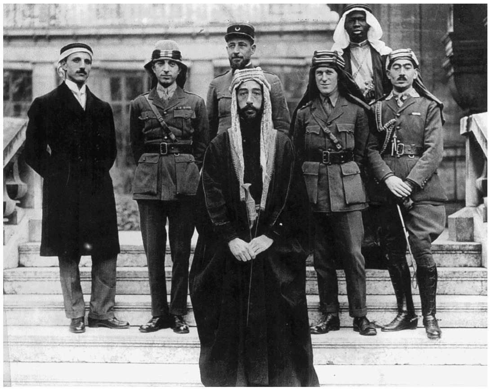
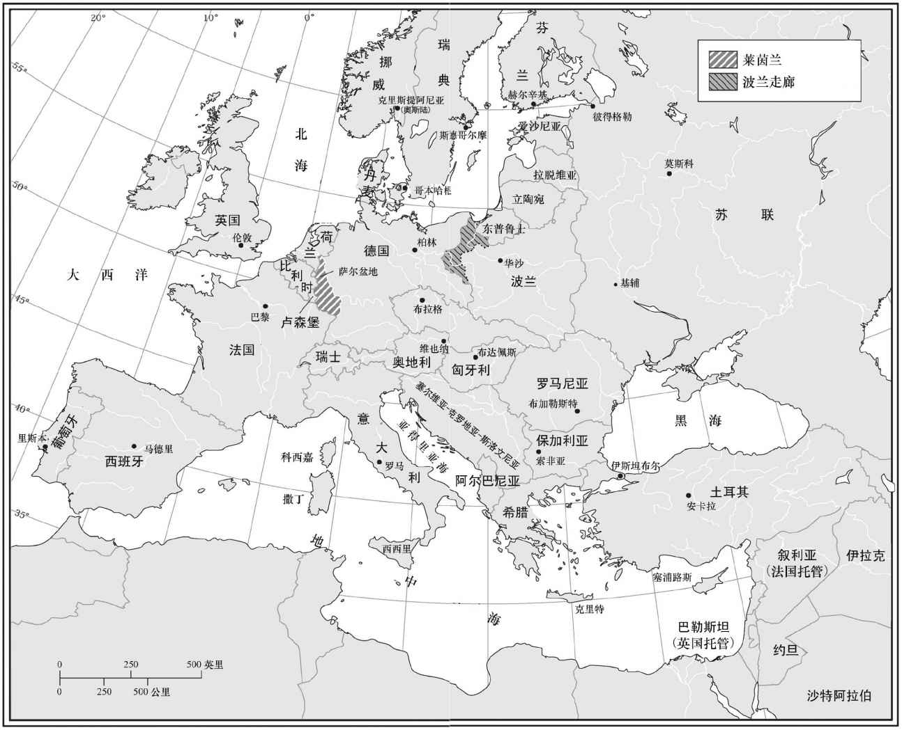

和同盟国各国签订的和约有：1919年6月28日对德国的《凡尔赛和约》、1919年9月10日对奥地利的《圣日耳曼条约》、1920年6月4日对匈牙利的《特里亚农条约》、1919年11月27日对保加利亚的《纳伊条约》和1920年8月10日对土耳其的《色佛尔条约》。对世界历史来说，这一全面和平解决有三个特点是十分重要的，分别是：建立了国际联盟，将民族自决的原则应用于欧洲，以及未能将这一原则应用到欧洲以外地区。
国际联盟的组成有两个基本目标。最重要的目标就是维护和平。它的成员国应互相承担对侵略的共同防御、将争端提交仲裁或调查争端，以及在仲裁之后三个月内避免战争。国联的第二个目的是关心国际范围的卫生、社会、经济和人道等问题。由于这一目的，国联建立了专门的机构，如卫生组织、智识合作委员会和国际劳工组织。总的说来，国联在履行其第二个职责方面取得了成功。它在改善国际劳动条件、促进世界卫生、同毒品交易和奴隶贸易作斗争、克服经济危机等方面被证明是很有价值的。但是，我们将会看到，国联并未能维持和平，而正是由于维持和平是它存在的理由，这一失败也就意味着整个组织的终结。

图254 为了让土耳其退出战争，协约国支持阿拉伯人摆脱土耳其获得独立的努力。参加1919年巴黎和会的代表包括帮助领导阿拉伯人造反的英国上校T.E.劳伦斯和中东地区的代表。照片中的人是：侯赛因国王的第三个儿子费萨尔王子（前景）、T. E. 劳伦斯上校（中间那排右二）和巴格达的陆军准将努日·巴萨·萨义德（左二）。
第一次世界大战后的和解还具有在民族自决原则的基础上重新划分欧洲边界的特点。重新划分欧洲边界这一点在《十四点和平纲领》中已明确提出，并通过各种和平条约而正式得到落实。最终结果是欧洲地图被大幅度修改。阿尔萨斯——洛林地区毫无疑问归还给了法国。俄国由于芬兰、拉脱维亚、爱沙尼亚和立陶宛等独立国家的建立而失去了它在波罗的海沿岸的大部分地区。独立的波兰在前俄国、德国和哈布斯堡帝国割让的诸省领土上成立；捷克斯洛伐克出现在前哈布斯堡帝国的版图上。南斯拉夫也形成了，它由战前的塞尔维亚、黑山和南斯拉夫人居住的各色前哈布斯堡帝国疆域组成。罗马尼亚因从奥匈帝国、俄国和保加利亚获得领土而使其面积增加了一倍多。最后，在古老的哈布斯堡帝国剩余的地区则出现了奥地利和匈牙利这两个小国家。
民族自决的原则在划分新边界时并不是在任何场合都受到尊重。的确，关于波兰和捷克斯洛伐克人数可观的日耳曼少数民族，南斯拉夫、罗马尼亚和捷克斯洛伐克的匈牙利少数民族，波兰、捷克斯洛伐克和罗马尼亚的俄罗斯少数民族，还存在愤愤不平的抗议。然而，尽管存在这些偏差，新边界却远比旧边界更符合民族主义愿望。少数民族的数目在第一次世界大战后比大战前要少得多（见地图29）。

地图29 第一次世界大战后的欧洲（1923年）
尽管调停人通常将民族自决的原则运用于欧洲，但他们却绝对不在欧洲以外地区这样做。这种差别对待在威尔逊的《十四点和平纲领》中可以清楚地觉察出来，纲领明确地阐述了应该如何满足欧洲各种少数民族的愿望，但是与此形成鲜明对照的却是，《纲领》第五条宣称：在殖民地，“当地居民的利益，应与管治权待决的政府的正当要求，获得同等的重视”。这里重要的一点是，它提到的是诸殖民地民族的“利益”而不是“愿望”。不用说，正是欧洲人自己在决定着这些“利益”是什么，因而其结果也就是变相形式的帝国统治，即所谓的托管制度。
《国联盟约》第22条把从同盟国手中获得的殖民地居民看作“在现代世界的紧张形势下还不能自己站立的民族”。因此，这一条款规定：“这些民族的监护应该委托给那些先进民族，即因其资源、经历或地理位置而最能承担这一责任的民族……同时，这一监护应由他们作为‘受托者’代表国联来执行。”值得注意的是，这种由“受托者”来“监护”的规定并没有扩大到获胜的协约国的殖民地，虽然这些殖民地的居民在许多方面都处于相似的发展水平或缺少发展。